Interacciones de especies: competencia!
BIOL4558
Agosto 2021
Interacciones de especies
El PVA, como recordará, tiende a estar muy centrado en una sola especie.
PERO la ecología de la población no tiene que estar centrada en una sola especie. Hay muchos casos en los que haríamos bien en pensar específicamente en las interacciones de las especies.
Desde el punto de vista del modelado, aquí es donde las cosas se ponen realmente interesantes: con las interacciones de las especies, ¡comenzamos a ver algunas propiedades emergentes realmente impredecibles!
Las interacciones de las especies se pueden clasificar según el efecto de la interacción en cada especie: (+, +), (+, -), (+, 0), (-, -), (-, 0), (0,0 )
P : ¿Puede nombrar cada una de las clases de interacción anteriores? [Edmodo]
Competencia
¿Qué es la competencia?
La competencia se define como un tipo de interacción entre especies mediante la cual las tasas vitales de población de cada especie se ven influenciadas negativamente por la presencia de la otra .
¡No hay mucha diferencia esencial entre la competencia dentro de las especies (uno de los mecanismos principales para la regulación de la población dependiente de la densidad) y la competencia entre especies por los recursos!
Explotación
Este es el tipo de competencia en la que probablemente pensamos primero: todos los individuos compiten por los recursos y todos tienen habilidades competitivas similares. Es gratis para todos: ¡todos reciben una porción de un pastel limitado!
La competencia por los recursos dentro de las especies es a menudo el mecanismo detrás de los procesos dependientes de la densidad que ya hemos discutido en esta clase. Dentro de una sola especie, esto a menudo se denomina “* competencia de revueltas *“.
Interferencia
A veces, el efecto negativo de un actor (individuo de la misma u otra especie) sobre otro actor se debe a la exclusión conductual directa. Este es el caso de las aves que mantienen territorios y mantienen a otras aves fuera del territorio.
Algunas plantas participan en una competencia de interferencia en un proceso llamado “alelopatía”.

Competencia de modelado: ¡extendiendo las ecuaciones de crecimiento logístico a más de una especie!
Si * competencia entre especies * y * competencia entre especies * son esencialmente lo mismo, ¡quizás podamos modelar estos procesos de la misma manera!
- ¡Recuerde la ecuación de crecimiento logístico!
\(\Delta N = r\cdot N_t \cdot (1-\frac{N}{K})\)
- Ahora considere el caso en el que tenemos dos especies cuya dinámica se puede describir mediante ecuaciones de crecimiento logístico:
Especie 1: \(\Delta N1 = r\cdot N1_t \cdot (1-\frac{N1}{K1})\)
Especie 2: \(\Delta N2 = r\cdot N2_t \cdot (1-\frac{N2}{K2})\)
- ¡Ahora imagina que el crecimiento de la población de cada especie se deprime aún más por la presencia de la otra! Podemos imaginar un escenario en el que (por ejemplo,) la presencia de una especie ayude a * llenar * la capacidad de carga de las otras especies, ¡y viceversa!
Especie 1: \(\Delta N1 = r\cdot N1_t \cdot (1-\frac{N1+\alpha N2}{K1})\)
Especie 2: \(\Delta N2 = r\cdot N2_t \cdot (1-\frac{N2+\beta N1}{K2})\)
Las constante \(\alpha\) y \(\beta\) son medidas del efecto de una especie sobre el crecimiento de las otras especies.
P : ¿qué significa si $ alpha $ es igual a 1?
P : ¿qué significa si $ alpha $ es igual a 5?
P : ¿qué significa si $ alpha $ es igual a $ frac {1} {5} $?
P : ¿qué significa si $ alpha $ es igual a cero?
Exploremos este modelo juntos en InsightMaker!
Paso 1 : clone un modelo básico de dos especies (que no interactúe) [aquí] (https://insightmaker.com/insight/77729/Base-2-species-model). Pruebe algunos ajustes de parámetros diferentes para asegurarse de que el modelo está haciendo lo que espera.
Paso 2 : Ahora agregue los términos “alfa” y “beta” para representar el grado en que la especie 1 compite con la especie 2, y viceversa. * ¿A qué deberían enlazar “alfa” y “beta”? *
Paso 3 : Cambie los valores de los parámetros y vea cómo se comporta el modelo.
¡Este modelo se conoce como * competición Lotka-Volterra *! El modelo lleva el nombre de los matemáticos Alfred Lotka y Vito Volterra.
Step 1: clone a basic (non-interacting) two-species model here. Try some different parameter settings, to make sure the model is doing what you expect!
Step 2: Now add the “alpha” and “beta” terms to represent the degree to which species 1 competes with species 2, and vice versa. What should “alpha” and “beta” link to??
Step 3: Change the parameter values around and see how the model behaves.
This model is known as Lotka-Volterra competition! The model is named after mathematicians Alfred Lotka and Vito Volterra
P: Qué sucede si una especie es un competidor superior? ¿Qué significa ser un competidor superior? ¿Puede una especie extinguirse?
P : ¿Qué condiciones son necesarias para la convivencia en este modelo? [sombrero de copa]
P : imagina que la especie 1 es una especie exótica, un posible invasor de un ecosistema dominado por la especie 2 (que está en capacidad de carga). ¿Bajo qué condiciones la especie 1 tiene éxito en la invasión? ¿En qué condiciones el invasor provoca la extinción de las especies nativas?
P : ¿puede identificar alguna condición de equilibrio (estable o inestable)?
La fase plana!
En el estudio de sistemas dinámicos (como el modelo de competición Lotka-Volterra) puede resultar muy útil visualizar el sistema en el la fase plana.
Para hacer esto, visualizamos la abundancia de cada especie que interactúa como una coordenada en un plano cartesiano, con una especie como eje y y la otra especie como eje x. Esta superficie 2-D se llama plano de fase.
Luego, para cada paso de tiempo en el modelo, graficamos dónde estamos en el plano de fase (grafica las abundancias de la especie 1 y la especie 2 como un punto en la superficie cartesiana bidimensional).
Por ejemplo:
Construyamos el modelo básico de competencia Lotka-Volterra en R.
Si desea seguir, puede descargar el guión aquí
##### EJEMPLO DE COMPETICIÓN DE LOTKA VOLTERRA
## Params
Alpha <- 1.1
Beta <- 0.5
InitN1 <- 100
InitN2 <- 300
K1 <- 1000
K2 <- 450
Rmax1 <- 0.05
Rmax2 <- 0.3
Nyears <- 1000
System <- data.frame(n1 = rep(InitN1,(Nyears+1)),n2 = InitN2)
doYear <- function(prevyear){
n1 <- prevyear[1] + prevyear[1] * Rmax1 * (1-((prevyear[1]+Alpha*prevyear[2])/(K1)))
n2 <- prevyear[2] + prevyear[2] * Rmax2 * (1-((prevyear[2]+Beta*prevyear[1])/(K2)))
return(c(n1,n2))
}
## Do simulation
for(i in 1:(Nyears+1)){
System[1+i,] <- doYear(System[i,])
}Ahora visualicemos el año cero en phase space:
####
# visualizar las abundancias iniciales en el plano de fase
plot(1,1,pch="",ylim=c(0,K2*1.5),xlim=c(0,K1*1.5),xlab="species 1",ylab="species 2")
points(System[1,],col="green",pch=20,cex=2)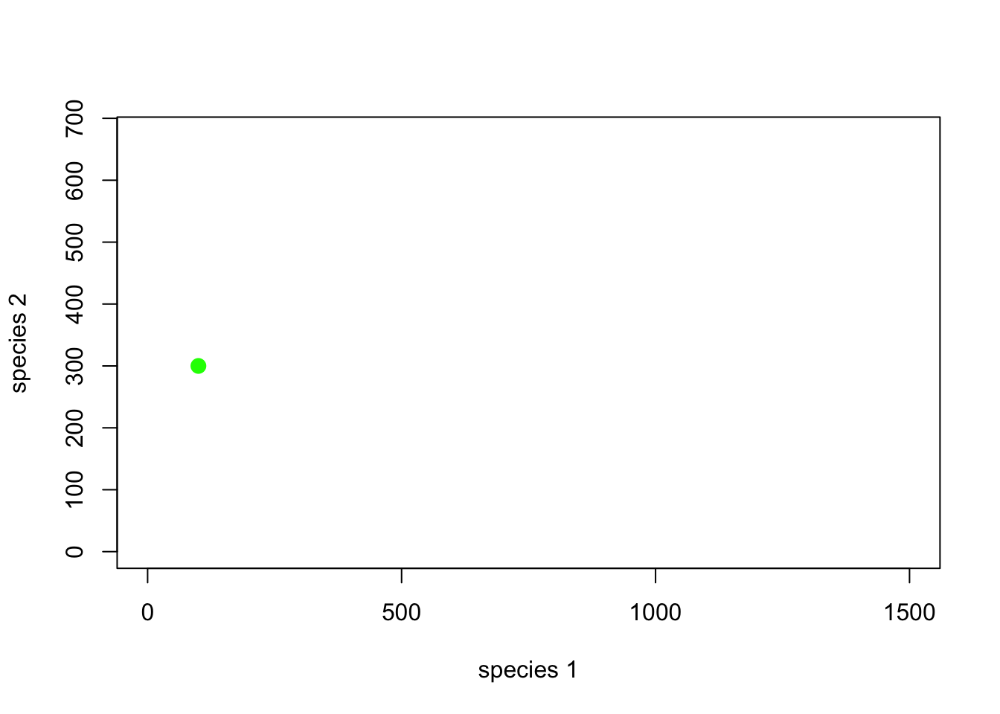
¿Qué tal los primeros 5 años …
# and the first 5 years...
plot(1,1,pch="",ylim=c(0,K2*1.5),xlim=c(0,K1*1.5),xlab="species 1",ylab="species 2")
points(System[1:6,],col="green",pch=20,cex=2)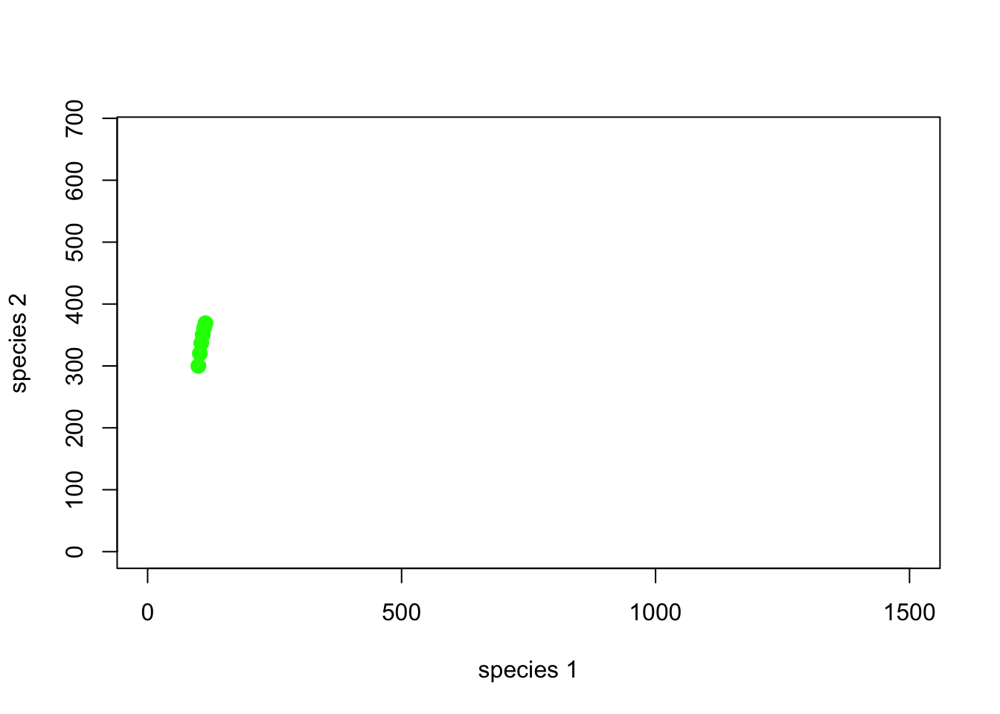
Tenga en cuenta que cada punto en el plano de fase tiene una ubicación y una * dirección * (piense en el plano de fase como un campo magnético) en cada punto del plano de fase, el sistema es atraído o repelido de ir en ciertas direcciones.
¿Y toda la simulación?
# and many years!
plot(1,1,pch="",ylim=c(0,K2*1.5),xlim=c(0,K1*1.5),xlab="species 1",ylab="species 2")
points(System,col="green",pch=20,cex=2)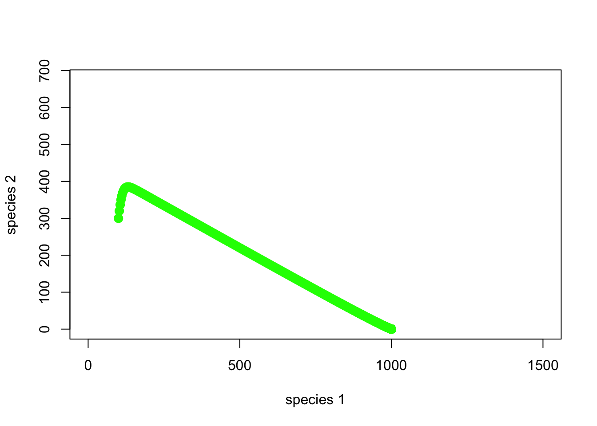
Bien, entonces la especie 1 está superando a la especie 2. ¡A medida que aumenta la abundancia de la especie 1, la abundancia de la especie 2 disminuye y terminamos con solo la especie 1!
Aquí hay otro ejemplo …
##### EJEMPLO DE COMPETICIÓN DE LOTKA VOLTERRA # 2
## Parametros
Alpha <- 0.3
Beta <- 0.2
InitN1 <- 100
InitN2 <- 300
K1 <- 1000
K2 <- 450
Rmax1 <- 0.05
Rmax2 <- 0.3
Nyears <- 1000
System <- data.frame(n1 = rep(InitN1,(Nyears+1)),n2 = InitN2)
doYear <- function(prevyear){
n1 <- prevyear[1] + prevyear[1] * Rmax1 * (1-((prevyear[1]+Alpha*prevyear[2])/(K1)))
n2 <- prevyear[2] + prevyear[2] * Rmax2 * (1-((prevyear[2]+Beta*prevyear[1])/(K2)))
return(c(n1,n2))
}
## Do simulation
for(i in 1:(Nyears+1)){
System[1+i,] <- doYear(System[i,])
}Con estos nuevos parámetros, el espacio de fase se ve así (con jittering para indicar la concentración de puntos:
# visualizar en el plano de fase
plot(1,1,pch="",ylim=c(0,K2*1.5),xlim=c(0,K1*1.5),xlab="species 1",ylab="species 2")
points(jitter(System[,1],500),jitter(System[,2],500),col="brown",pch=20,cex=0.3)
abline(h=K2,v=K1,col="gray",lwd=2,lty=2)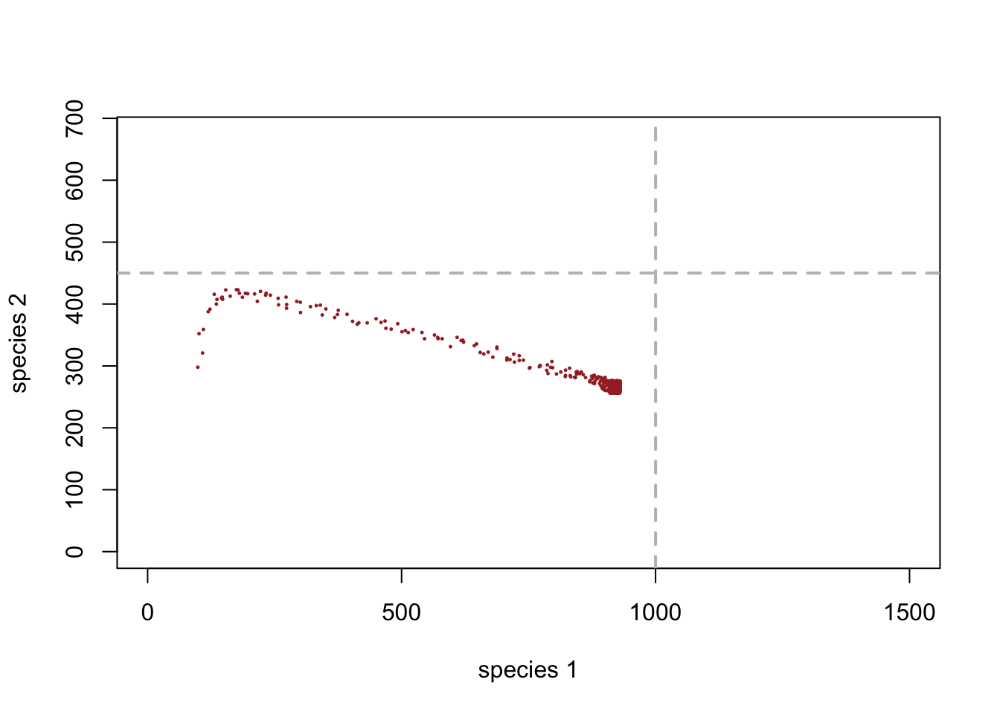
Puede ver que este sistema ha llegado a un equilibrio al final, justo por debajo de la capacidad de carga de la especie 1.
Finalmente, consideremos múltiples puntos de partida y veamos cómo se comporta el sistema.!
##### EJEMPLO DE COMPETICIÓN DE LOTKA VOLTERRA # 3: múltiples puntos de partida
## Parametros
InitN1 <- 1200
InitN2 <- 25
System1 <- data.frame(n1 = rep(InitN1,(Nyears+1)),n2 = InitN2)
## Do simulation
for(i in 1:(Nyears+1)){
System1[1+i,] <- doYear(System1[i,])
}
InitN1 <- 500
InitN2 <- 100
System2 <- data.frame(n1 = rep(InitN1,(Nyears+1)),n2 = InitN2)
## Do simulation
for(i in 1:(Nyears+1)){
System2[1+i,] <- doYear(System2[i,])
}
InitN1 <- 800
InitN2 <- 600
System3 <- data.frame(n1 = rep(InitN1,(Nyears+1)),n2 = InitN2)
## Do simulation
for(i in 1:(Nyears+1)){
System3[1+i,] <- doYear(System3[i,])
}Ahora, el espacio de fase se ve así (con jittering para indicar la concentración de puntos:
# visualizar en el plano de fase
plot(1,1,pch="",ylim=c(0,K2*1.5),xlim=c(0,K1*1.5),xlab="species 1",ylab="species 2")
points(jitter(System[,1],500),jitter(System[,2],500),col="brown",pch=20,cex=0.3)
points(jitter(System1[,1],500),jitter(System1[,2],500),col="green",pch=20,cex=0.3)
points(jitter(System2[,1],500),jitter(System2[,2],500),col="red",pch=20,cex=0.3)
points(jitter(System3[,1],500),jitter(System3[,2],500),col="blue",pch=20,cex=0.3)
abline(h=K2,v=K1,col="gray",lwd=2,lty=2)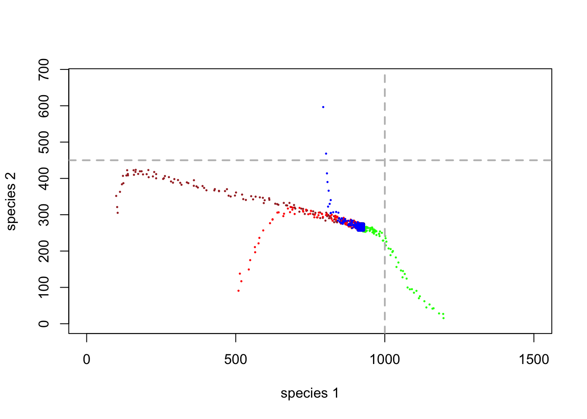
P : ¿Tiene este sistema de dos especies un equilibrio estable?
¡Trabajando en el plano de fase!
Hay mucho que puede aprender sobre un sistema de dos especies que interactúan trabajando con el plano de fase.
En primer lugar, es útil imaginar que cada punto en el espacio de fase está asociado con una flecha, que indica hacia dónde se espera que vaya el sistema desde ese punto en el espacio de fase (cada punto tiene una dirección asociada).
Entonces, imagina que comenzamos con la abundancia inicial en las figuras anteriores. ¿Dónde apunta la flecha en el espacio de fase?
La * longitud * de la flecha representa la velocidad a la que el sistema se moverá en la dirección de la flecha (el grado de * repulsión * desde ese punto en el espacio de fase).
Ahora imagine que dibujamos flechas a lo largo del espacio de fase, que representan hacia dónde se espera que vaya el sistema.
Nota: este ejemplo usa código R de Paul Hurtado
##########
# ¡Visualice el plano de fase con flechas!
##########
#######################################################################################
## SPECIFY MODEL AND INITIALIZE
#
## toggle switch function for phase arrow and nullcline plotting
toggle = compiler::cmpfun(function(u,v,parms) {
c( u*parms[1]*(1-(u+(parms[2]*v))/parms[3]), v*parms[4]*(1-(v+(parms[5]*u))/parms[6]) )
})
fun=toggle ## Our generic name for the system of equations to look at! ;-)
#
## toggle switch function for computing solution trajectories with deSolve::ode()
#Toggle = as.ode.func(toggle)
#
## parameter values?
Rmax1 <- 0.05
Alpha <- 0.3
K1 <- 1000
Rmax2 <- 0.3
Beta <- 0.2
K2 <- 450
parms=c(Rmax1,Alpha,K1,Rmax2,Beta,K2)
# toggle(100,100,parms)
xlim = c(5,2000)
ylim = c(5,1000)
new <- phasearrows.calc(toggle,xlim,ylim,resol=25,parms=parms)
plot(1,1,pch="",xlim=xlim,ylim=ylim,xlab="N1",ylab="N2")
phasearrows.draw(new)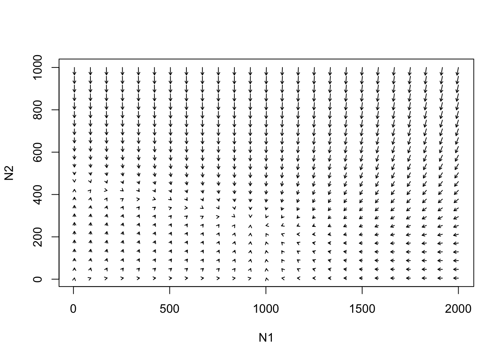
#
## END MODEL SPECIFICATION AND INITIALIZATION
#######################################################################################Tome cualquier punto de partida arbitrario. Ahora podemos rastrear la trayectoria que tomará el sistema en el espacio de fase.
¡¡Intentalo!!
Verá que hay algunos umbrales clave en el espacio de fase que debemos considerar. Por ejemplo, las flechas pueden invertir la dirección.
Isoclinas!
Las isoclinas ayudan a delinear esas características clave en el espacio de fase, algo así como las cimas de las montañas. ¡El lugar más allá del cual las flechas hacia arriba se convierten en flechas hacia abajo!
He aquí un ejemplo:
Especie 1 isoclina …
#### example with phase-plane arrows
plot(1,1,pch="",xlim=xlim,ylim=ylim,xlab="N1",ylab="N2")
phasearrows.draw(new)
abline(K1/Alpha,-(K1/Alpha)/K1,col="red",lwd=3) # species 1
abline(K2,-K2/(K2/Beta),col="blue",lwd=3) # species 1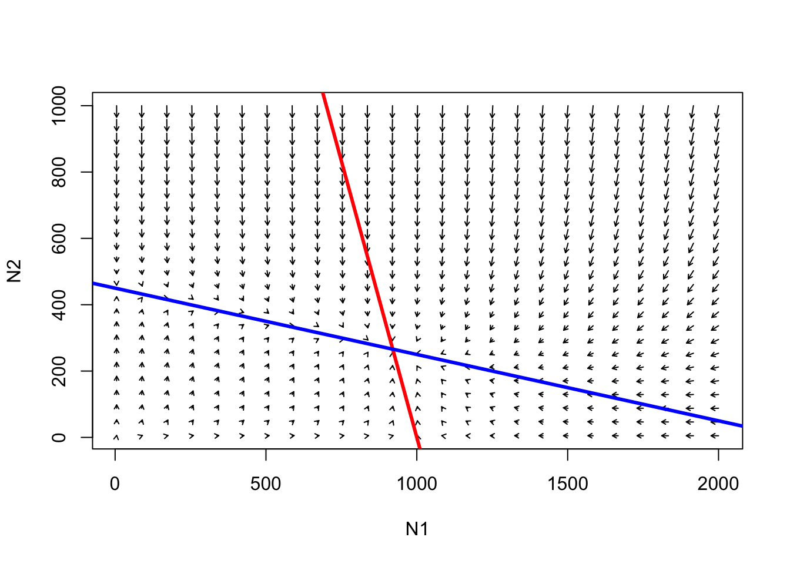
La línea roja representa las condiciones bajo las cuales la tasa de crecimiento de la especie 1 es cero.
P : ¿bajo qué condiciones se “agota” la capacidad de carga para la especie 1?
Por debajo de la línea roja, la especie 1 tenderá a aumentar.
Por encima de la línea roja, la especie 1 tenderá a disminuir.
¡La línea azul (isoclina) representa las condiciones bajo las cuales se agota la capacidad de carga de la especie 2!
P : ¿bajo qué condiciones se “agota” la capacidad de carga para la especie 2?
Por debajo de la línea azul, la especie 2 tenderá a aumentar.
Por encima de la línea azul, la especie 2 tenderá a disminuir.
Q : considere el punto donde se cruzan las dos isoclinas. ¿Qué representa este punto? [Edmodo]
Consideremos el siguiente caso …
##########
# Another example
##########
Rmax1 <- 0.2
Alpha <- 1.1
K1 <- 1000
Rmax2 <- 0.2
Beta <- 0.9
K2 <- 500
parms=c(Rmax1,Alpha,K1,Rmax2,Beta,K2)
# toggle(100,100,parms)
xlim = c(5,1500)
ylim = c(5,1000)
new <- phasearrows.calc(toggle,xlim,ylim,resol=25,parms=parms)
plot(1,1,pch="",xlim=xlim,ylim=ylim,xlab="N1",ylab="N2")
phasearrows.draw(new)
abline(K1/Alpha,-(K1/Alpha)/K1,col="red",lwd=3) # species 1
abline(K2,-K2/(K2/Beta),col="blue",lwd=3) # species 2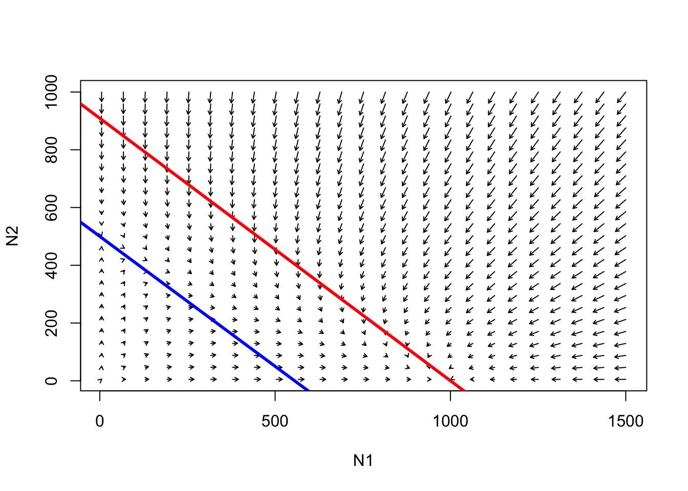
Siga las trayectorias desde cualquier punto en este espacio de fase. ¿Cuál es el resultado aquí?
P : ¿Existe un equilibrio en todo el sistema? [sombrero de copa]
P : ¿Hay algún punto en este espacio de fase en el que el crecimiento de la población sea negativo para la especie 1 (K1 agotado) y positivo para la especie 2 (parte del K2 sin uso)?
P : ¿Qué sucede con la especie 1 cuando la capacidad de carga se agota para la especie 2? ¿Hay espacio para la invasión de la especie 1?
P : ¿Qué sucede con la especie 2 cuando la capacidad de carga se agota para la especie 1? ¿Hay espacio para la invasión de la especie 2?
¿Qué tal este ejemplo?
#########
# And another example!
#########
Rmax1 <- 0.5
Alpha <- 1.05
K1 <- 890
Rmax2 <- 0.2
Beta <- 0.5
K2 <- 890
parms=c(Rmax1,Alpha,K1,Rmax2,Beta,K2)
# toggle(100,100,parms)
xlim = c(5,1500)
ylim = c(5,1000)
new <- phasearrows.calc(toggle,xlim,ylim,resol=25,parms=parms)
plot(1,1,pch="",xlim=xlim,ylim=ylim,xlab="N1",ylab="N2")
phasearrows.draw(new)
abline(K1/Alpha,-(K1/Alpha)/K1,col="red",lwd=3) # species 1
abline(K2,-K2/(K2/Beta),col="blue",lwd=3) # species 2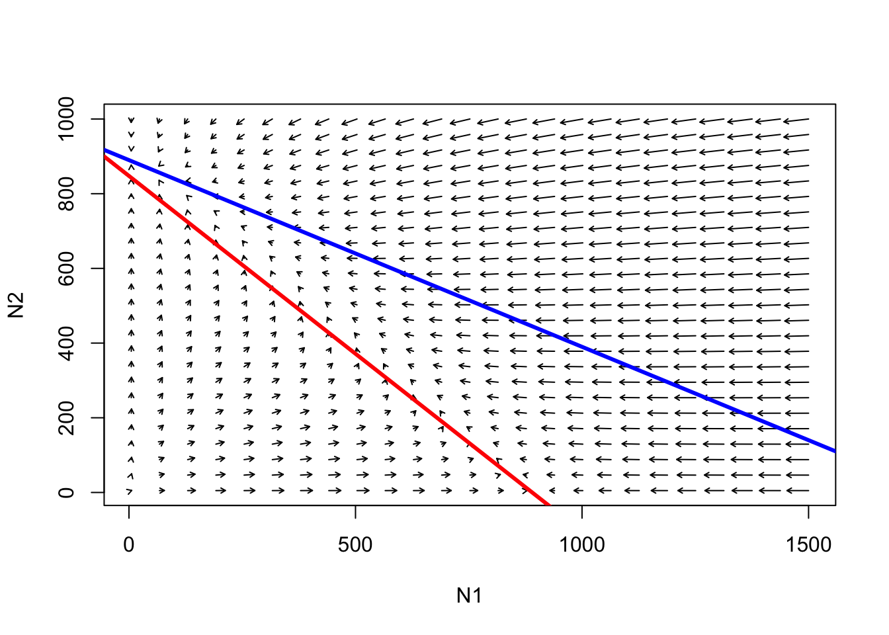
Siga las trayectorias desde cualquier punto en este espacio de fase. ¿Cuál es el resultado aquí?
** P **: ¿Existe un equilibrio en todo el sistema?
¿Qué pasa con este caso (volviendo al ejemplo anterior …):
########
# And another!
#########
Alpha <- 0.3
Beta <- 0.2
K1 <- 1000
K2 <- 450
Rmax1 <- 0.05
Rmax2 <- 0.3
Nyears <- 1000
ylim=c(0,K2*1.5)
xlim=c(0,K1*1.5)
plot(1,1,pch="",ylim=ylim,xlim=xlim,xlab="species 1",ylab="species 2")
points(jitter(System[,1],500),jitter(System[,2],500),col="brown",pch=20,cex=0.4)
points(jitter(System1[,1],500),jitter(System1[,2],500),col="green",pch=20,cex=0.4)
points(jitter(System2[,1],500),jitter(System2[,2],500),col="red",pch=20,cex=0.4)
points(jitter(System3[,1],500),jitter(System3[,2],500),col="blue",pch=20,cex=0.4)
parms=c(Rmax1,Alpha,K1,Rmax2,Beta,K2)
xlim = c(5,1500)
ylim = c(5,1000)
new <- phasearrows.calc(toggle,xlim,ylim,resol=15,parms=parms)
phasearrows.draw(new)
abline(h=K2,v=K1,col="gray",lwd=2,lty=2)
abline(K1/Alpha,-(K1/Alpha)/K1,col="red",lwd=2) # species 1
abline(K2,-K2/(K2/Beta),col="blue",lwd=2) # species 2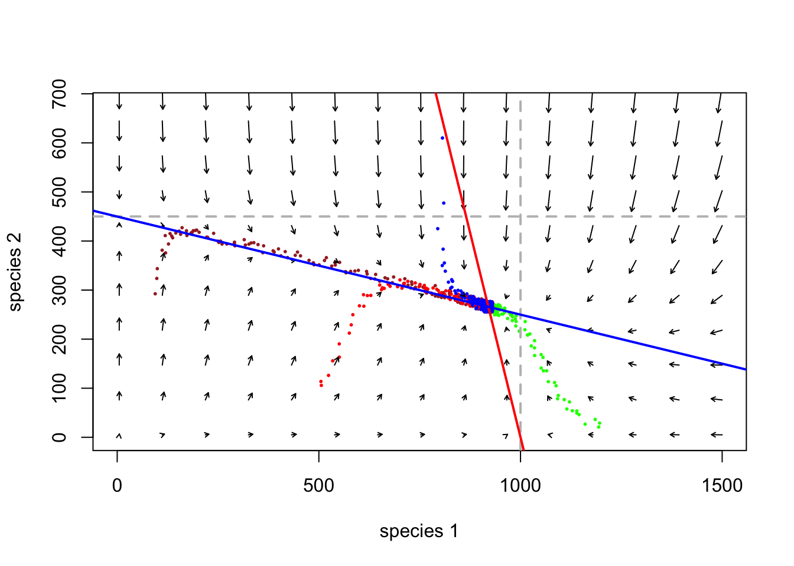
** P **: ¿En qué parte de esta figura se “mueve” el sistema más rápido? (Analogía del campo magnético: atracción y repulsión más fuertes)
Finalmente, considere este ejemplo:
########
# And finally...
########
Rmax1 <- 0.2
Alpha <- 1.5
K1 <- 1000
Rmax2 <- 0.2
Beta <- 2
K2 <- 1500
parms=c(Rmax1,Alpha,K1,Rmax2,Beta,K2)
# toggle(100,100,parms)
xlim = c(5,1500)
ylim = c(5,1000)
new <- phasearrows.calc(toggle,xlim,ylim,resol=25,parms=parms)
plot(1,1,pch="",xlim=xlim,ylim=ylim,xlab="N1",ylab="N2")
phasearrows.draw(new)
abline(K1/Alpha,-(K1/Alpha)/K1,col="red",lwd=3) # species 1
abline(K2,-K2/(K2/Beta),col="blue",lwd=3) # species 2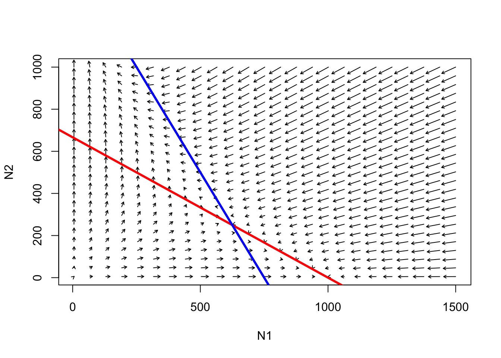
P : ¿es el punto donde las dos isoclinas cruzan un * equilibrio *?
P : ¿es el punto donde las dos isoclinas cruzan un * equilibrio estable *?
P : ¿qué pasaría si la especie 1 estuviera en K y la especie 2 intentara invadir? ¿Y viceversa?
P : ¿qué pasaría si ambas especies intentaran invadir un hábitat vacío al mismo tiempo?
Phase space in InsightMaker
You can visualize populations moving through the phase plane in InsightMaker! To do this, just click on “Add Display” in the graphics window (which comes up automatically when you hit “Simulate”) and create a “Scatter Plot”. For the “Data” field, select the two stocks (species abundances).
If you don’t already have a working L-V competition model you can load up the basic L-V competition model here
Step 1: Set the key parameters (alpha, beta, K1, K2) to arbitrary values
Step 2: Draw out the phase plane with isoclines for both competing species.. Also draw out the expected direction of growth in each quadrant/region of the phase plane.
Step 3: Pick an arbitrary starting value. What do you think the trajectory is going to look like?
Step 4: Run this model in InsightMaker. Does the system behave as expected?
Step 5: Evaluate the following statement (from the Gotelli Book):
“the more similar species are in their use of shared resources, the more precarious their coexistence”
Q: Does \(r_{max}\) have any role to play in determining system stability for the lotka-volterra competition model?